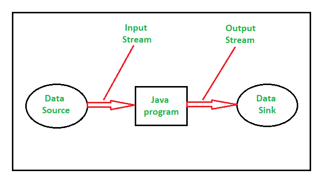

From Java IO to Java NIO

December 28, 2019
The java.io and java.nio package contains nearly all classes one need to perform input and output (I/O) in Java. It focuses on I/O Streams, these streams simplifies I/O operations.
Java NIO (New IO) was introduced from JDK 4 to implement high-speed IO operations. It is an alternative to the standard IO API’s.
Stream is defined as sequence of data.
InputStream, it represents input stream of bytes, to read data from source.
OutputStream, it represents input stream of bytes, to write data to destination. An output stream accepts output bytes and sends them to some sink.
| IO |
NIO |
| It is based on the Blocking I/O operation |
It is based on the Non-blocking I/O operation |
| It is Stream-oriented |
It is Buffer-oriented |
| Channels are not available |
Channels are available for Non-blocking I/O operation |
| Selectors are not available |
Selectors are available for Non-blocking I/O operation |
1.
Stream oriented vs Buffer Oriented Packages:
Java IO is a stream-oriented package which means that it can be read one or more bytes at a time from a stream. It uses a stream for transferring the data between data source/sink and java program. It is a unidirectional data transfer. Unlike Java IO, Java NIO is a buffer oriented package. This means that the data is read into a buffer from which it is further processed using a channel. For example, a thread asking a channel to read data into a buffer and while the channel is reading data to the buffer simultaneously the thread can go for some other work. Once the data is read into the buffer, the thread can then continue to process the work which it had left during the read operation. Therefore, NIO is a bi-directional data transfer.
2.
Blocking IO vs Non Blocking IO Packages:
Java IO is a blocking IO. This means that if a thread is invoking a read() or write() operation, that thread is blocked until there is some data to read or the data is fully written. That’s why it is synchronous IO or blocking IO.
Unlike Java IO, Java NIO is a non-blocking IO. This means that if a thread is invoking a read() or write() operation, that thread is not blocked until there is some data to read or the data is fully written rather the thread go on something else. That’s why it is an asynchronous IO or non-blocking IO.
3.
Channels:
A channel is a medium for efficient data transmission between entity and buffer. It acts as a gateway for open connection with data source/sink.
4.
Selector:
The selector selects the channel among the multiple IO channels using the single thread.
It basically select the channels which are ready for the I/O operation.
Java NIO is considered to be faster than regular IO because:
* Java NIO supports non-blocking mode. Non-blocking IO is faster than blocking IO because it does not require a dedicated thread per connection. This can significantly improve scalability when you need to handle lots of simultaneous connections, as threads are not very scalable.
* Java NIO reduces data copying by supporting direct memory buffers. It is possible to read and write NIO sockets without any data copying at all. With traditional Java IO, the data is copied multiple times between the socket buffers and byte arrays.